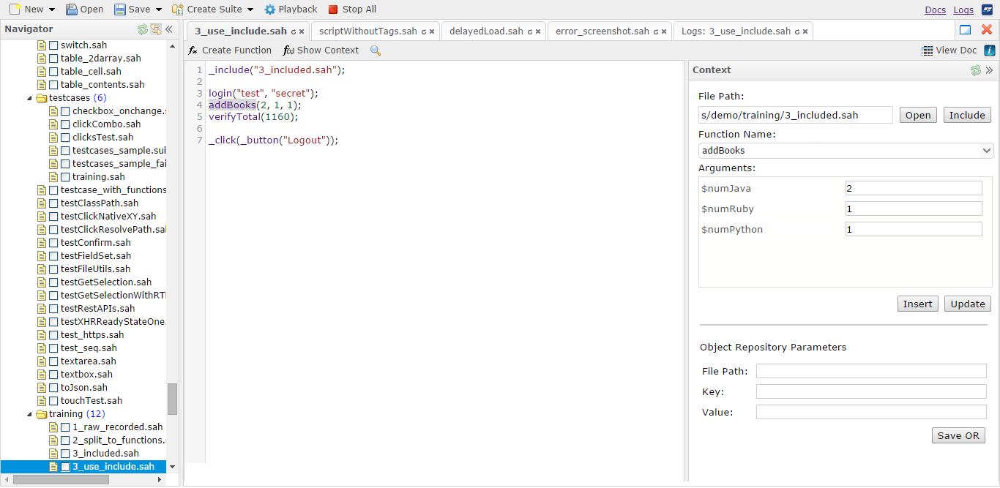
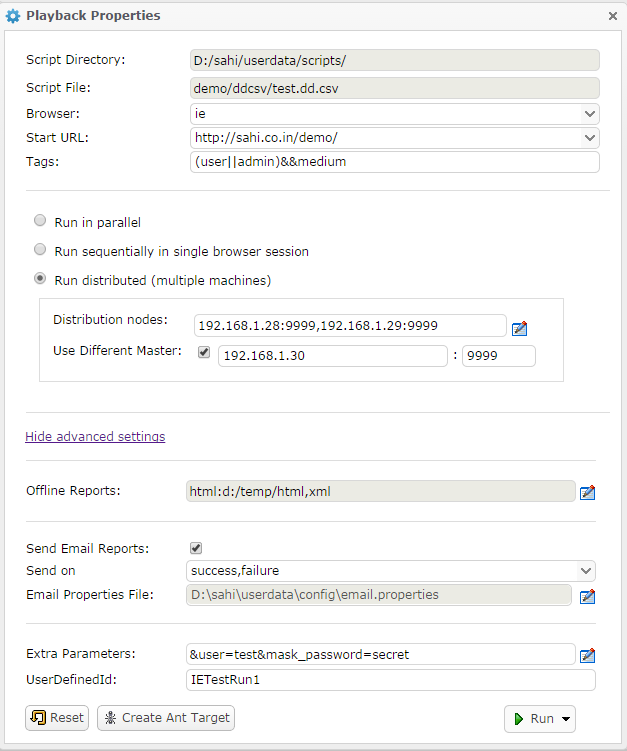
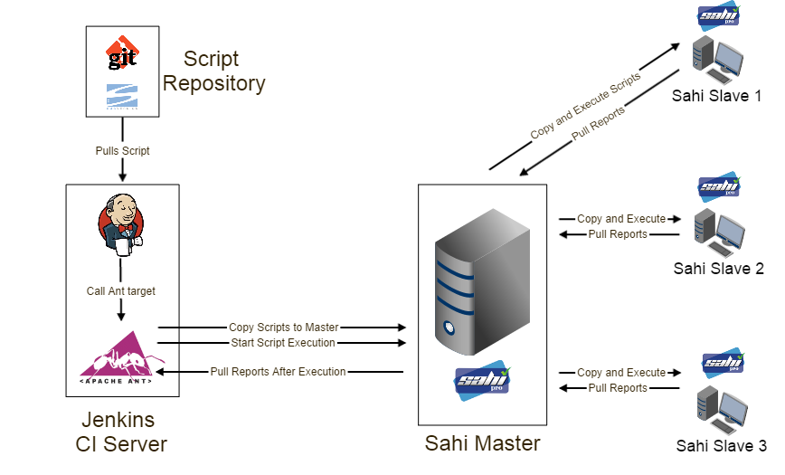
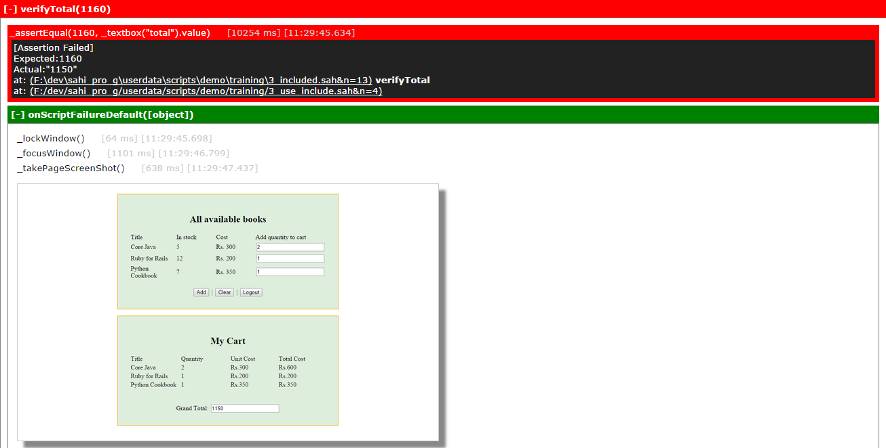
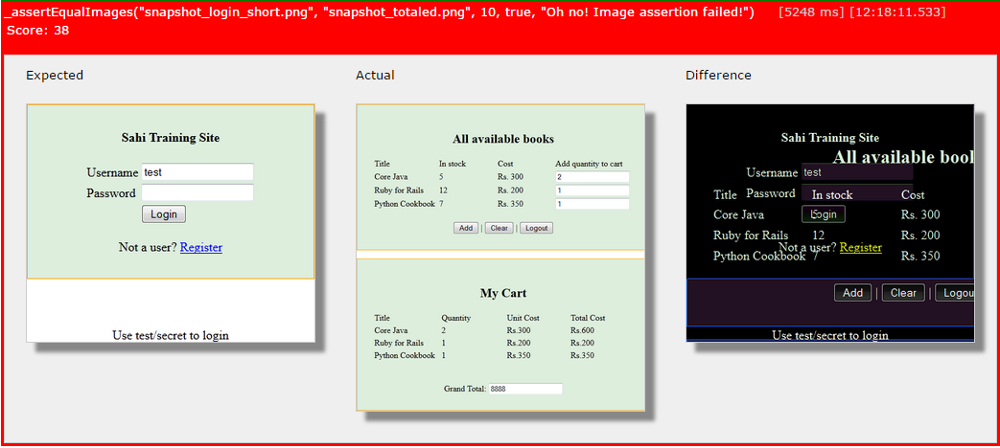

Sahi Pro - What is new in Sahi Pro v6.0.0
abstract
Sahi Pro v6.0.0 is a major release and contains many new features and fixes.
The focus of this release is tester productivity enhancement.
The focus of this release is tester productivity enhancement.
warning
This release has significant changes in userdata folder.
Please do not upgrade on an existing installation.
Please do a fresh installation of Sahi Pro 6.0.0. in another folder and copy over your older userdata/scripts folder to the new installation.
Also selectively copy changes from userdata/config files to the new installation.
Please do not upgrade on an existing installation.
Please do a fresh installation of Sahi Pro 6.0.0. in another folder and copy over your older userdata/scripts folder to the new installation.
Also selectively copy changes from userdata/config files to the new installation.
Key features
Editor
 Script and Suites Editor
The Sahi Script Editor has been completely revamped. The editor allows you to view all the scripts
in the scripts directories and edit them from the browser based editor. The editor supports normal Sahi scripts,
Scenario files (.s.csv) and Data-driven Suite files (.dd.csv).
Editor Context Pane
The Context pane of the editor lists all known functions in the script directories, making discovery of functions very easy.
One can view the details of functions used in scripts, discover and call functions from any other script
and also create new functions through the "Create Function" dialog.
This prevents testers from writing duplicate functions or making mistakes in function names or parameters passed.
Object repository entries are also visible and editable via the Context pane.
Playback from editor
 Scripts and suites can be executed directly from the Editor.
Functionality of the older Web based testrunner (available upto v5.1.2) has been integrated into the Editor.
One can choose single or multiple browsers for playback. Suites can be played back sequentially in a single browser session,
or run in parallel on a single machine or run distributed across multiple machines with parallel instances running on each machine.
Simple or data-driven suites can also be created on the fly using the Create Suite functionality.
Ant targets and Jenkins support
Ant targets for running with builds can now be created from the Script Editor itself via the "Create Ant Target" functionality.
Read more in "Triggering Sahi Pro from Jenkins" section.
Triggering Sahi Pro from Jenkins
 Sahi Pro needs real browsers to playback test scenarios. But most Jenkins/build machines run in server mode and do not have a GUI.This forces end users to either try with headless browsers or to execute Sahi scripts remotely.
With the new changes this is what you can do:
Jenkins machine (J): Run Jenkins on server. No Sahi installed.
Sahi Master machine (SM): Sahi Pro runs on this machine and behaves as Master
Sahi slave machines (SL1, SL2, SL3): These are slave machines with Sahi Pro running on them.
During the build process:
Jenkins pulls the latest scripts from the Source Control Management (SCM) system.
It calls the Sahi ant target. Sahi target copies over the scripts from Jenkins (J) to master (SM).
SM then copies scripts to SL1, SL2, SL3, distributes the execution and collects all reports.
Sahi ant target then pulls reports from SM to Jenkins.
This allows Jenkins to remain a headless server and does not need Sahi installed on it.
Also all distribution of scripts and pulling of reports happens through Sahi's ant target itself.
Object Repository
Object repository is now tightly integrated in Controller itself.-
Once a Object Repository file is chosen, an element will always be identified first by its OR entry, even when not in recording mode. This prevents the same element from being identified in multiple ways in different scripts.
-
When elements have been smartly identified using Relational APIs like _near or _under once, newer recordings on those pages will simply use the OR entry, so other users do not need to worry about doing it again or wrongfully using a different identification mechanism.
-
There is also provision to modify existing OR entries.
Better Reporting
Browser Page and Element Screenshots via _takePageScreenShot
Screenshots are a useful way to get more information in case of script failures. Sahi now has the ability to takescreenshots of just the browser content and not the full desktop. One can even take screenshots of specific elements like
a table or a div containing a graph. Have a look at _takePageScreenShot API for usage.
Better error stacktraces
 On script failure or error, Sahi logs now shows the stacktrace of function calls, allowing easy navigation to calling functions.Script locking for synchronization
API _lock allows synchronization between scripts.When a lock on one label is obtained another script cannot obtain the lock on the same label and will wait till _unlock is called.
Similarly _lockWindow API can be used to exclusively work on a particular window. This is useful in taking screenshots
during parallel playback. This is already used in global_include.sah
Globally included global_include.sah file
All scripts now automatically include global_include.sah file during playback.Common error handling functions like onScriptError and onScriptFailure can be defined here.
Sahi Pro 6.0.0 ships with a default global_include.sah with default implementations of error callback functions.
Searching scripts within suites in Sahi's logs
It is now possible to search both by suite and script name and also see scripts executed as part of suite runs.Improved Graphs
Graphs on suites reports page have been improved to present information better.Compare images
 APIs for comparing two images and asserting on images has been added. Combined with the ability to take screenshots ofindividual elements, you can now add assertions of graphs or specific UI elements which are to be
asserted for their visual correctness.
Native events
Sahi Pro so far had support for native keyboard events. From 6.0.0 native mouse events are also supported.This allows complex functionality like dragdrop across multi domain iframes, complex file upload controls etc.
New APIs
Fetch related APIs- _getTableContents: Gets contents from an html table
- _getOptions: Gets the values or texts of all options of the select element
- _getScreenSize: Returns the inner width and inner height of the browser window
- _userAgent: Returns the UserAgent string of the browser
- _areEqual: Compares two JavaScript types or arrays
- _isPhantomJS: Returns if the current browser is a PhantomJS browser
- _clickNative: Performs a native click on an element
- _clickNativeXY: Performs a native click at the given coordinates
- _doubleClickNative: Performs a native double click on an element
- _rightClickNative: Performs a native right click on an element
- _dragDropNative: Simulates a dragdrop event from element 1 to element 2 using native events
- _dragDropNativeXY: Simulates a dragdrop event from element at first set of coordinates to element at second set of coordinates, using native events
- _assertVisible: Use this instead of _assert(_isVisible)
- _assertNotVisible: Use this instead of _assert(!_isVisible)
- _assertEqualImages: Asserts that two images are similar
- _assertSnapShot: Takes a page screenshot of the webpage or requested element and asserts its similarity to a reference image
- _takePageScreenShot: Take a full page screenshot of a browser element or the web page
- _compareImages: Allows comparison of two images
- _logImage: Logs an image to the Report logs
- _windowExists: Use this to check if a window is open
- _getRecentWindow: Returns the most recently opened window
- _lockWindow: Use this instead of _lock when dealing with window related APIs
- _unlockWindow: Use this when using _lockWindow
- _startDocumentation: Use this to document an existing script
- _stopDocumentation: Stops the documentation
- _toJSON: Converts a JSON object to a string
- onBeforeStep: Called before every step in the script
- onAfterStep: Called after every step in the script
Modified API's
- _isVisible: $checkZIndex and $doScroll have been newly added. Scripts written before 6.0.0 do NOT need changes.
- _takeScreenShot: $format and $resizePercentage have been moved into a $props parameter. Scripts written before 6.0.0 will need changes.
- _scriptStartTime: Returns a Date object. Previous versions returned a String. Scripts written before 6.0.0 will need changes.
- _lastAlert: _lastAlert now takes an optional parameter $allalerts. If $allalerts is true it will return all alerts encountered in that session, as an array. Scripts written before 6.0.0 do NOT need changes.
- _lastConfirm: _lastConfirm now takes an optional parameter $allconfirms. If $allconfirms is true it will return all confirmation messages encountered in that session, as an array. Scripts written before 6.0.0 do NOT need changes.
Other Features and Enhancements
- Set button has been removed from Playback tab in controller. You can directly Play a script.
- Configure screens can only be accessed from local machine, so one cannot access another Sahi server and look at its properties. One can reset this behaviour by setting
configuration.allow_remote_access=truein userdata.properties. - DRun works with multiple browsers
- If a node does not have the browser available, DRun will automatically distribute the scripts to other nodes on which the browser is available.
- Logs can be viewed in English if "&lang=en" is added to the logs URL.
- Suite Name and Script Name have been added to the Filter criteria. One can filter reports using either of these fields. If Suite Name is chosen, suite reports that match the suite name will be displayed. If Script Name is chosen, all scripts and suites containing the script would be displayed.
- One can configure whether attachment should be sent along with email, at the end of a run. By default, attachment would be sent. To disallow it, set
mail.send_attachment=falsein userdata.properties - One can configure the maximum size of attachment sent with email after a run. By default, there is no limit on the size. To change this, add
mail.max_allowed_attachment_size=<size>in userdata.properties.<size>is to be specified in bytes. 0 means no limit. - Added a new window property sahiWindowId which is returned as part of window objects from _getWindows. sahiWindowId is an id autogenerated by Sahi and can be used in _selectWindow and _windowExists APIs
- One can configure the CSV separator to be used when dealing with Data driven suites(.dd.csv), .csv and Scenario files(.s.csv). By default, this is a comma (","). But this can be changed, say to a semi-colon(";") by setting
csv.word_separator=;in userdata.properties.
This csv separator will be used when running a data driven suite. It will also be used when loading and saving a scenario file or data driven suite from the Editor. - Reports Export to Excel functionality enhanced.
- Screenshot images now appear in the Excel file exported from a Script report
- Export to Excel functionality added in Testcase report page
- Accessor metadata information has now been externalized. This is modifiable via userdata/config/accessors_metadata.txt (HTML), accessors_applet_metadata.txt (Applets) and accessors_flex_metadata.txt(Flex). So if one wants to change the order of attributes appearing in the Alternatives dropdown in the Controller or add a new attribute, etc, they can modify these text files directly instead of having to touch JavaScript source files. Restart Sahi for the changes to take effect.
- Added ability to specify downloadable content in content_detection.txt. The pattern to add looks like
download:.*abc.*. If a page's initial content matches this pattern, it will be downloaded. This is useful when one cannot use download_urls.txt for this purpose.
Example: Assume a webpage that displays some HTML content and a Submit button. On pressing the Submit button, the server returns an XML response. Assume that the url does not change in the response. Since the response is XML, Sahi cannot process this page. Hence it has to be downloaded. But putting the url in download_urls.txt will cause the first page also to be downloaded. So instead, find a pattern in the starting content of the second webpage and add that pattern in content_detection.txt. - Enhanced stacktraces in logs
- _getExcel changes:
- If a cell has a formula,
getDataandgetfunctions return value instead of formula. Added a methodgetCellFormulathat returns formula.
- If a cell has a formula,
- Added
getSheetNamesthat returns all the sheet names as a String array - Added
getRawWorkbookwhich returns a Workbook POI object. This gives the user the flexibility to deal with the Workbook object directly - Added
getCellObjectthat returns a Cell POI object. - Added
getCellFontthat returns a Font POI object.
Function Name textbox when creating a function from the Editor. This list of functions can be specified in function_names.txt from the Configure UIdload.number_of_time_subject_execute=<number> in userdata.properties."controller.display_attribute_type.enabled" in userdata.properties. By default, attribute type is not displayed.Bug Fixes
- If email send fails, the last script's status did not get updated in the offline reports
- Wait for offline logs to be written before returning SUCCESS or FAILURE status
- In drun, only available browsers are now used.
- Time taken for drun was updated twice - once before and once after log creation.
- readCSV for mac (\r\n) fixed
- Corrected total steps count in logs.
- Simple optimization to try inject in sample first. Fixes bug of Out of Memory Error in html-head-script-20mb-/script-/html
- Fix for drun offline logs not showing images. Copying only if image exists.
- imageDirectory is now created, if it does not exist while creating offline logs.
- Fix for testcases reporting. Once a sript failed with an error, further testcases were not being logged. Also fixes duplicate error logging in Excel framework.
- Sometimes a blank line with timestamp was visible in logs.
- ERROR log now comes inside function folding
- Handle window titles with quotes in _popup
- Takes care of unicode in logs and controller playback tab. Fixed Log_highlight to show unicode characters properly.
- _readCSV fixed for handling empty rows.
- Fixed saving script bug with extra new line on top.
- DRUN Throws Exception if the nodes string has space after a comma
- XHR monitoring in IE fixed.
- Default lock timeout increased to 1 minute from 5 seconds.
- Added configurable delay time for typeNative Safari bug. Default time is 10 ms.
- Changes made for showing NaN for time taken in Log in IE and firefox Browser.
- Added Confirmation message in Controller Record functionality, if file already exists.
- Fix to show "is key tool available" and "is jar signer available" in Controller info tab
- Fixed "SSLProtocolException: handshake alert: unrecognized_name" by setting jsse.enableSNIExtension=false.
- Prevent NTLM auto login and prevent caching of NTLM credentials.
- Noise data is no longer stored in the database for dload.
- _windowAction() will now fail gracefully upon call in Linux.
- _collectAttributes() was returning null if the collection array is huge.
- Now HARViewer works in H2 db as well as MySql.
- Alerts did not appear when recording script.
- Fixed broken XUA injection
- email properties changed for prefix in subject and content
- SSL root certificate acceptance fails if there is a space in path of sahi
- Fixed bug - When running a suite in Opera 24, the log incorrectly shows Chrome.
- Fixed wrong message in assertExists failure.
- domainfix.txt file no longer needed. Sahi automatically handles this.
- _assert statements fixed to always cause failure, not error. This means that when evaluating the _assert, if an element is not found, it will be handled as a failure and not as an error. Thus the script will continue to execute.
- Fixed browser stacktrace in case of failure.
- Removed console.log statements and also added a dummy console.log for older browsers.
- Removed exception for java and ruby driver while recording confirm and prompt.
- Changed displayInfo to fix accessor.value for java/ruby controller mode.
- Fixed issue - if an element identifier has slashes, it was not identified correctly
- Assertions when recorded, should not double escape newlines. "a\nb" should not become "a\\nb"
- Fixing flakiness due to race conditions in fetch functionality. Fixes collect and count related random failures.
- Fix for _setStrictVisibility not working on iframes unless page is reloaded.
- Fixing build recurseInIframes handles different domains.
- Added a 2nd parameter - "relative" in _position API
- Fixed toLowerCase error if sahi.accessor.ignore_case=true.
- Identification of
<object>tag in Opera, IE9 and IE10. - Truncating long strings in logs of function arguments
- Excel framework null, blank behavior fixes: If blank cell, treat as null in excelfw. Handle null in function logging (was [object])
- Now _wait works for time given as String
- setselected now works with selectbox with size > 0. conversion added for java keycodes to phantomjs keycodes.
- Changes in _writeCSVFile API For Extra line in start of a CSV file while overwriting. and changes accordingly in csv.sah
- Added other characters (like '$', "@', etc) to be written using native events